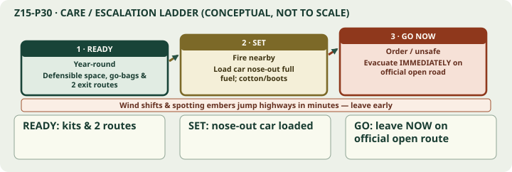

Z15-P30 · Disaster scenarios · New manuscript
Execute Ready-Set-Go wildfire evacuation tiers before smoke traps roads
Leave wildland-urban interface areas decisively while roads stay clear and visible instead of gambling on last-minute escapes.
When it applies · Forested communities, cabins, rural acreage, and suburban edges facing Red Flag Warnings or active wildfires.
Equipment · Multi-channel local evacuation alerts, outward-parked fueled vehicle, pre-packed go-bags, and two mapped exit corridors.

Actions
- Learn the evacuation terms your locality uses before fire season. Stage documents, medications, pets and an accessible route early. Leave promptly when directed, using official routes.[D08, D14]
- Remember that wind shifts and spotting embers jump highways and change fire direction in minutes—if you feel unsafe or see thick advancing smoke/ash even BEFORE a formal Go order arrives, leave early on your own initiative.[D08, C18]
- Never stay behind trying to defend a house with a garden hose when mandatory evacuation orders issue—wildland fire storms overwhelm municipal water pressure and trap stay-behind residents behind burning trees.[D08, C19]
Failure recognition · Waiting on the porch during a Level 2 "Set" advisory to see flames before loading the car, only to find smoke and fire trucks blocking the sole forest road.[D08, D14]
Verify · Confirm vehicle parked nose-out with fuel full during Set stage, go-bags/pets/meds loaded, and immediate departure on Go orders.[D08, D14]
Stop or change course · Advancing flames, falling burning embers, or official Go orders override every property task—drive out immediately along official open routes.[D08, D14]
Evidence and editorial notes
- C18 · NWS Chicago · Definitions of a Fire Weather Watch and a Red Flag Warning (Current web edition)
- Section: Red Flag Warning and Fire Weather Watch Definitions · Conditions: Local fire weather outlook and land-manager order
Support: A Red Flag Warning means local conditions support extreme fire danger. Check local criteria and restrictions and adjust plans.
Limitations: A wind advisory alone is not a Red Flag Warning or an ignition permit. · Conflicting evidence: See A02 claim audit for boundaries.
Editorial note: Establishes Red Flag / high-wind conditions as automatic no-fire triggers. · Specialist reviewer: Wildland fire safety and meteorology
Primary source · checked 2026-11-25 - C19 · FEMA / Ready.gov · Wildfires (current web edition)
- Section: Wildfires > Stay Safe and Smoke Protection · Conditions: Approaching wildfire or heavy smoke in camp or community
Support: Evacuate early along open routes per official orders, protect airways from heavy smoke, and avoid turning back into active fire corridors.
Limitations: Cloth face coverings do not filter fine wildfire smoke particles; fitted particulate respirators or clean indoor air are distinct interventions. · Conflicting evidence: None; coordinates with NWS-WILDFIRE.
Editorial note: Covers wildfire escape and smoke decision thresholds in Z01/Z03. · Specialist reviewer: Emergency management and fire safety
Primary source · checked 2026-11-24 - D08 · FEMA / Ready.gov · Wildfires (current web edition)
- Section: Stay safe during wildfire; evacuate when directed · Conditions: Wildfire threat with local warning and evacuation system
Support: Plan to leave early and follow official open routes and local evacuation orders. Return only when allowed.
Limitations: Ready–Set–Go is one local vocabulary. Vehicle staging is editorial and does not justify delay after a warning. · Conflicting evidence: See A02 claim audit for boundaries.
Editorial note: Grounds wildfire evacuation readiness and route-abort decisions. · Specialist reviewer: Wildland fire management and emergency services
Primary source · checked 2026-11-24 - D14 · FEMA / Ready.gov · Evacuation (current web edition)
- Section: Before, during and after evacuation · Conditions: Official evacuation or a preplanned, safely accessible departure
Support: Prepare a go-kit, routes, transport and a contact plan. Follow official routes and use the locally indicated registration or reunification channel.
Limitations: Shelter accessibility and animal accommodations require local and ADA guidance; no fixed national website is assumed. · Conflicting evidence: See A02 claim audit for boundaries.
Editorial note: Core evacuation execution and accountability evidence in Z15. · Specialist reviewer: Emergency management and transportation safety
Primary source · checked 2026-11-24
Source lineage · FEMA Ready.gov Wildfires; new manuscript · Classification · New manuscript.